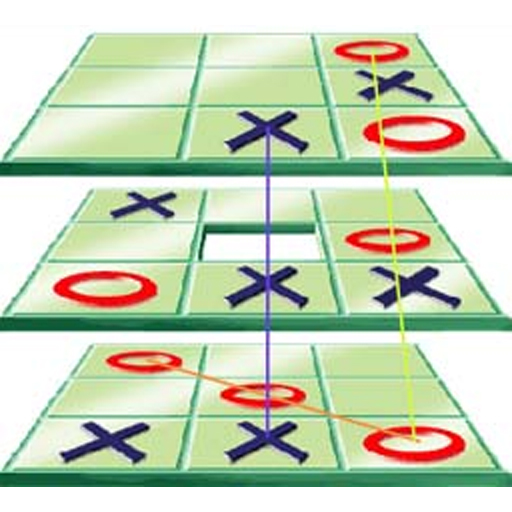
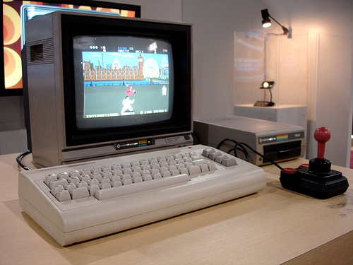
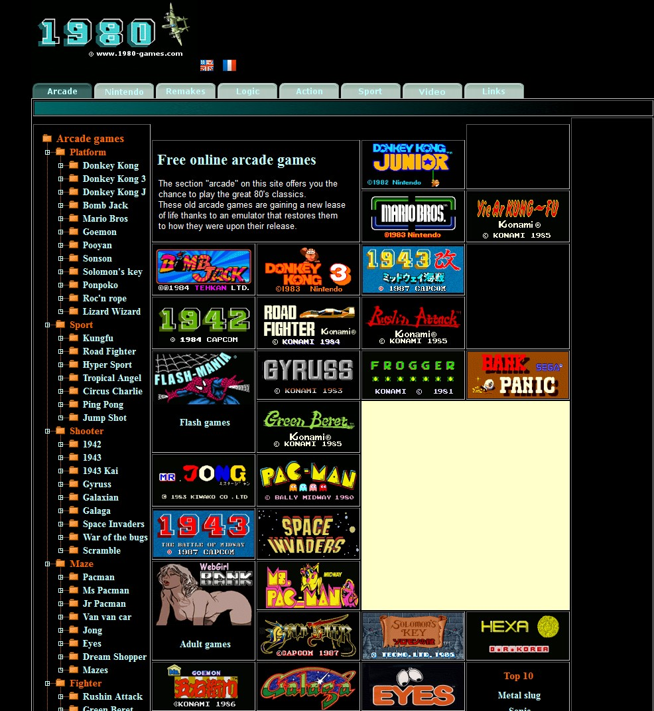
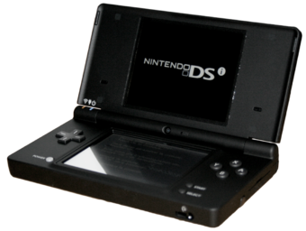
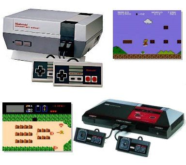
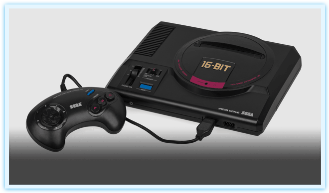

The whole gaming era started by inventing a game which although it already had kind of a controller that can be compared with the newest ones,
nowadays is far away from the gaming we now.
But this game was only the first game created for entertainment.
Before this game was invented there were many games which were created only for experiments.
At the beginning video games were only created for research or for recreation. Many 2D strategic games in the early 1950's and
3D games as tic-tac-toe and Moon Landing in 1960's were only played by professors and students for testing them.
At that time games were made by means of punch cards and they were played on computers like the IBM 1560.

3D Tic-Tac-Toe
Video games did'nt became known to mankind until 1970s and 1980s.
Only after the first video arcade games,
video game consoles like Magnavox Odyssey and home computer games were invented in these years,
gaming became popular all over the whole world.
Today playing games is a form of entertainment and a part of modern culture over the whole world.
The first video arcade gamesThe first video game console of AtariAn Atari joystick with only one button
From 1960 numbers of programmers grew more and more, and so did the number of created games.
Meanwhile games also were sold commercially in catalogs.
After the costs of computers had fallen and more programming languages with more abilitys were invented,
a much better era of gaming began. Also by launching the commercial video game industriy in 1971 with coin-operated arcade games,
a big step to a better gaming future was made. From 1978 to 1982 arcade games were very common at the People.
During the 1980's gaming computers, early online gaming and handheld LCD games also were invented.

A gaming computer in 1980's

A online games website in 1980's

A handheld LCD game in 1980's
Unfortunately in 1983 this gaming era was badly affected by the video game crash.
Many big game companys went bankrupt because of many factors.
One of them was the saturation of markets in the number of game consoles and the many games invented at that time.
The revenue fell from 1983 to 1985 from $ 3.2 Billion to $ 100 Million which was a precentage drop of almost 97 percent.
After the abrupt end of the crash a new generation of console video gaming started.
The third generation of game consoles,
which were 8-bit units went from 1983 to 1995 and was followed by the fourth generation,
which were 16-bit models. This went from 1987 to 1999.
In these years it came to the resurgance and decline of arcade games,
the transition to 3D games, improved handheld gaming and PC gaming.

Third generation console

Fourth generation console
These generations went from 1993 to 2013.
In this time the consoles were 32 and 64-bit units,
mobile phone gaming was getting popular and
online gaming became a major aspect of video game culture.
This era was also marked by the huge development budgets for some games with cinematic graphics.
Also the Wii console became famous because you could control the game with real-life movement of the controller.
By 2013 the newest generation of consoles began.
Since then many new consoles were invented and the best of them are Microsoft's Xbox One and Sony's PlayStation 4.
Meanwhile there are two newer consoles which are the PlayStation 5 and the Xbox Series X.